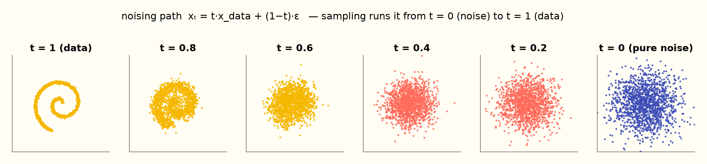
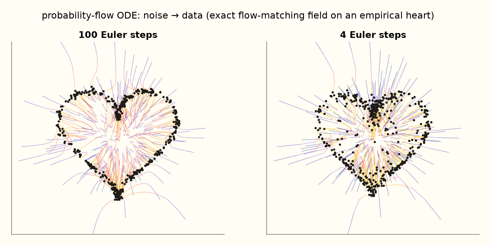
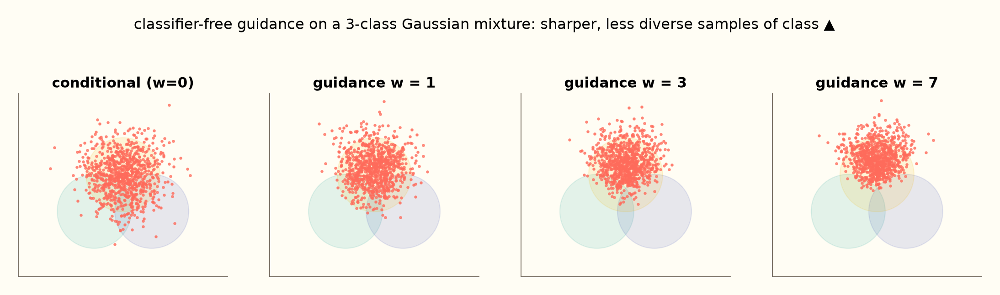
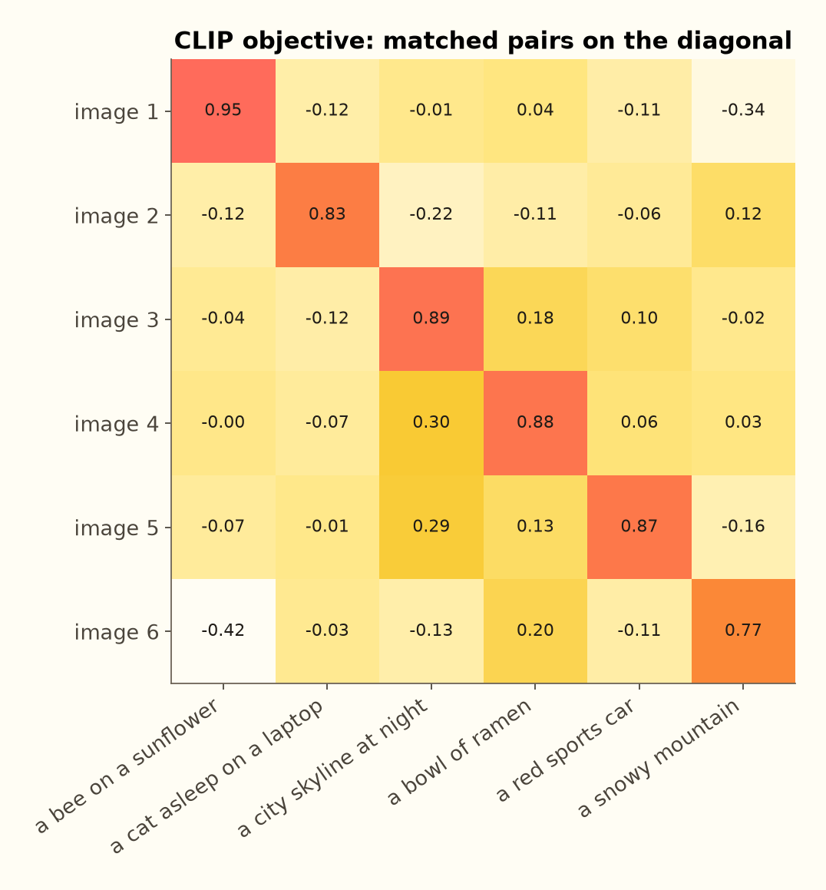

00Today's flight plan
A generative model learns $p(x)$, the distribution your data came from, well enough to sample new data from it. Yesterday's GPT did this one token at a time. Today we generate whole images in one shot by learning to undo noise.
- Generation = transporting noise to data along a learned vector field.
- Flow matching regresses the velocity of straight noise→data paths, then samples by solving an ODE.
- Guidance steers samples; latents + DiTs scale them up; CLIP connects images and text.
One family tree, one unifying idea
Noise → art in 2D, plus reflow
How text-to-image actually works
Turn the guidance knob
Zero-shot classification, retrieval
The weirdest digit wins
01The generative family tree
📜 Autoregressive
Factorize $p(x)=\prod_t p(x_t\mid x_{<t})$ and predict one piece at a time. Exact likelihood, great for discrete sequences (text, code), and slow to sample long outputs. Day 3.
🧬 VAEs
Encode to a latent $z$, decode back, and keep the latent distribution close to a simple prior. Fast to sample but often blurry on its own. Its big modern role is as the compressor for latent diffusion.
⚔️ GANs
A generator tries to fool a discriminator. Sharp samples, but adversarial training is unstable and prone to mode collapse. Today they mostly survive as an extra loss for few-step distillation.
🌫️ Diffusion
Gradually add noise, learn to remove it. Stable training and excellent sample quality; classically needs many denoising steps.
🌊 Flow matching
Learn a velocity field that moves noise to data along simple (often straight) paths, then integrate an ODE. The simplest objective, and widely used in recent image and video models.
⚡ Few-step models
Consistency models and distillation compress a 50-step sampler into 1–4 steps, making generation feel real-time.
The reparameterization trick $z = \mu + \sigma\odot\epsilon$ lets gradients flow through sampling.
02Diffusion: learning to denoise
Define a path that slowly destroys data by mixing it with Gaussian noise. Destroying is easy. A network trained to undo one small step at a time can then start from pure noise and walk all the way back to data.

Predicting the noise is equivalent, up to scaling, to estimating the score $\nabla_x \log p_t(x)$, the direction that increases data likelihood (Song et al., 2021). Sampling follows the score downhill in noise level.
03Flow matching: the elegant version
Flow matching (Lipman et al., 2023) and rectified flow (Liu et al., 2023) strip the idea down. Pick a noise sample $x_0$ and a data sample $x_1$, and connect them with a straight line. Train a network to predict the velocity along that line. At sampling time, start at noise and integrate the learned velocity field.
Sampling: solve $\tfrac{dx}{dt} = v_\theta(x,t)$ from $t=0$ to $1$ with Euler or Heun steps. The regression target is just "where you're going minus where you started".
for x1 in loader: # a batch of data
x0 = torch.randn_like(x1) # a batch of noise
t = torch.rand(len(x1), 1)
xt = (1 - t) * x0 + t * x1 # a point on the straight path
loss = ((model(xt, t) - (x1 - x0)) ** 2).mean() # regress the velocity
opt.zero_grad(); loss.backward(); opt.step()
x = torch.randn(n, 2) # sample: Euler-integrate the ODE
for i in range(steps):
t = torch.full((n, 1), i / steps)
x = x + model(x, t) / stepsBelow is the exact flow-matching velocity field for a finite dataset, computed live in your browser. It's what a perfectly trained network would learn. Try different step counts: with one step, every particle lands near the data's mean. The individual paths are straight, but the marginal flow (averaged over all the noise–data pairings that pass through a point) curves. That's why few-step sampling is hard, and why reflow and distillation exist.

DDPM, score-based SDEs and flow matching are different parameterizations of the same picture: a time-dependent vector field transporting a simple distribution to the data distribution. Flow matching just chooses the simplest path and the simplest regression target.
04Steering: classifier-free guidance
A conditional model $v_\theta(x, t, c)$ follows a prompt or class $c$ only loosely. Classifier-free guidance (Ho & Salimans, 2022) trains one network both with the condition and without it (by randomly dropping $c$ about 10% of the time), then extrapolates away from the unconditional prediction at sampling time:
$w=0$ is plain conditional sampling. Larger $w$ gives samples that look more like class $c$ and less like the others: higher fidelity, lower diversity, and eventually over-saturated images.

05Scaling up: latents, DiTs and video
🗜️ Latent diffusion
Running diffusion on 1024×1024×3 pixels is wasteful. Rombach et al. (2022) first compress images with an autoencoder (~8× per side) and run diffusion in that latent space, which is far cheaper and keeps perceptual quality.
🧱 DiT
Peebles & Xie (2023) replaced the UNet with a plain transformer over latent patches, and it scales predictably like LLMs. Stable Diffusion 3 (2024) combined rectified flow with a multimodal DiT in which text and image tokens attend to each other.
🎬 Video & world models
Treat video as a 3-D grid of spacetime patches and apply the same diffusion-transformer recipe. Push further and condition on actions, and you get interactive world models (such as DeepMind's Genie line) that generate explorable environments frame by frame.
⚡ Few-step generation
Consistency models (Song et al., 2023) and adversarial or distribution-matching distillation train students that jump from noise to image in 1–4 steps, which is what makes real-time generation possible.
06Multimodal: CLIP and vision-language models
CLIP (Radford et al., 2021) trains an image encoder and a text encoder so that matching pairs land close together in a shared embedding space. Train on enough internet image–caption pairs and you get zero-shot classification for free: embed "a photo of a {class}" for each class and pick the closest one.
A batch of N pairs gives N² candidate matches, of which N are correct: cross-entropy over rows (image→text) and columns (text→image). SigLIP (Zhai et al., 2023) replaces the softmax with independent sigmoids, which scales better across devices.

Most vision-language models follow the LLaVA-style recipe: a pretrained vision encoder (often CLIP- or SigLIP-style) turns an image into patch embeddings, a small projector maps them into the LLM's token space, and the LLM reads them as "visual tokens" alongside text. Newer natively multimodal models train on interleaved image and text from the start, and some generate images too.
07Today's labs
Flow Matching From Scratch (Noise → Art in 2D)
The core idea behind modern image and video generators, in 2D where you can see everything. Train a velocity field, integrate an ODE from noise to data, then straighten the paths with reflow.

- Trace the path from VAE to diffusion to flow matching
- Train conditional flow matching with linear paths
- Write Euler and Heun ODE samplers
- Use reflow to get good few-step sampling
- Compare against DDPM noise prediction
Class-Conditional Generation with Classifier-Free Guidance
Train a small conditional UNet on MNIST, add label dropout, and turn the classifier-free guidance knob to see the quality vs. diversity trade-off appear in front of you.

- Build a time- and class-conditioned UNet
- Train with label dropout for CFG
- Sweep guidance scales and compare sample grids
- Make denoising filmstrips
- Understand latent diffusion and DiT at a conceptual level
Multimodal Magic: Contrastive Learning & CLIP
Implement the InfoNCE loss and watch a tiny two-tower model align images with text, then use a pretrained CLIP for zero-shot classification, prompt ensembling and retrieval.

- Implement symmetric InfoNCE (the CLIP loss)
- Train a toy two-tower model
- Classify zero-shot with prompt engineering
- Retrieve images and text from a shared embedding space
- Implement the SigLIP sigmoid loss
🍯The honey jar
Today, distilled. If you remember nothing else, remember these.
- 1Diffusion, score models and flow matching are one family: a time-dependent field that carries a simple distribution to the data distribution.
- 2Flow-matching loss: regress vθ(xt, t) onto x₁ − x₀. Training needs no simulation and is about as simple as it gets.
- 3Sampling is ODE solving. Fewer steps are faster but blurrier; reflow and distillation fix that.
- 4Classifier-free guidance trades diversity for fidelity: (1+w)·conditional − w·unconditional.
- 5Latent diffusion + diffusion transformers (DiT) are the scalable recipe for images and video.
- 6CLIP's contrastive loss builds a shared image–text space, which gives you zero-shot classification and retrieval.
- 7Vision-language models feed vision-encoder tokens into an LLM through a small projector.
🧨 Myth busters
💼 Interview flashcards
Say your answer out loud, then flip the card. Retrieval practice is the most reliable way to make knowledge stick.
08Quiz: check your honey
Score: 0 / 5
09Daily challenge
🖼️ The gallery walk: weirdest digit wins
Using your Lab 4.2 model, create the most creative, impossible digit you can. Allowed tricks:
- Negative guidance (w < 0): "anything but a 7"
- Class interpolation: blend the embeddings of 3 and 8 halfway
- Guidance schedules: strong early, weak late, or the reverse
- Print your best grid, pin it on the wall, and vote with honey stickers 🍯
10Reading & going deeper
- Auto-Encoding Variational BayesKingma & Welling · ICLR 2014
- Denoising Diffusion Probabilistic ModelsHo, Jain, Abbeel · NeurIPS 2020
- Score-Based Generative Modeling through Stochastic Differential EquationsSong et al. · ICLR 2021
- Flow Matching for Generative ModelingLipman et al. · ICLR 2023
- Flow Straight and Fast: Learning to Generate and Transfer Data with Rectified FlowLiu, Gong, Liu · ICLR 2023
- Classifier-Free Diffusion GuidanceHo & Salimans · 2022
- High-Resolution Image Synthesis with Latent Diffusion ModelsRombach et al. · CVPR 2022
- Scalable Diffusion Models with TransformersPeebles & Xie · ICCV 2023 · DiT
- Scaling Rectified Flow Transformers for High-Resolution Image SynthesisEsser et al. · ICML 2024 · Stable Diffusion 3
- Consistency ModelsSong, Dhariwal, Chen, Sutskever · ICML 2023
- Learning Transferable Visual Models From Natural Language SupervisionRadford et al. · ICML 2021 · CLIP
- Sigmoid Loss for Language Image Pre-TrainingZhai et al. · ICCV 2023 · SigLIP
- Visual Instruction TuningLiu, Li, Wu, Lee · NeurIPS 2023 · LLaVA